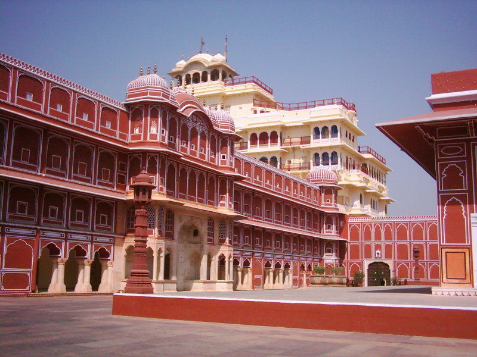
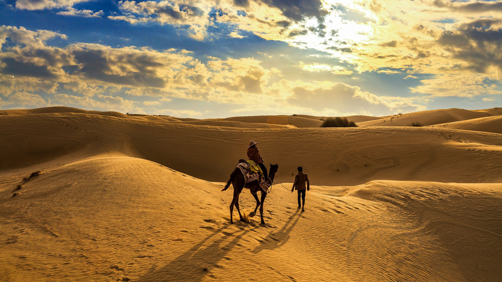
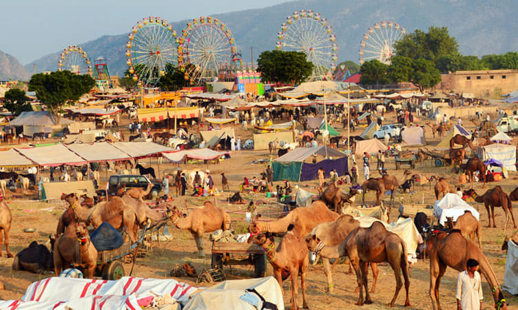

Amer Fort
Amer Fort in Jaipur is a magnificent fort known for its artistic Hindu style elements, including large ramparts, series of gates, and cobbled paths.
The fort overlooks Maota Lake and attracts tourists with its palace halls, gardens, and cultural performances.

City Palace, Jaipur
City Palace is a royal residence blending Mughal and Rajasthani architecture. It houses museums displaying royal costumes, arms, and artifacts of the Rajput era.
The palace complex is one of Jaipur's most iconic cultural landmarks.

Thar Desert
The Thar Desert, also called the Great Indian Desert, is a vast arid region known for its sand dunes, camel safaris, and desert festivals.
Visitors experience the unique desert culture, including folk music, dance, and local cuisine.

Pushkar Camel Fair
The Pushkar Fair is an annual livestock and cultural festival, attracting thousands of tourists. It showcases camel trading, folk performances, and traditional Rajasthani handicrafts.
The festival is a vibrant display of Rajasthan's desert traditions.
Culture & Traditions
Rajasthan is famous for its forts, palaces, folk dances like Ghoomar and Kalbeliya, traditional music, and colorful attire including turbans and lehengas.
The state’s cuisine, handicrafts, and festivals reflect its rich royal heritage and desert culture.